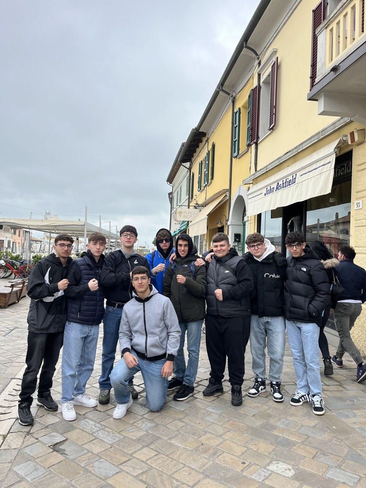

Nicolo' o per gli amici Omar è un appassionato di basket e di sport in generale, se vuoi contattarmi schiaccia il bottone qui sotto.
ContattamiSono un ragazzo di 17 anni che frequenta informatica nell'istituto Einstein - De Lorenzo. Pratico basket a livello agonistico e inoltre ho passione per la palestra e anche per i videogiochi.
Il basket per me non è solo uno sport, lo considero una disciplina. Da piccolo ero molto negato col basket, poi all'età di 14 anni ho iniziato ad allenarmi duramente d'estate, cercando di migliorare carenze cestistiche e di IQ.
Allenamenti costanti per raggiungere il massimo delle mie capacità.
Il gioco non riguarda solo la vittoria, ma il viaggio per arrivarci.
Il basket mi ha insegnato l'importanza del lavoro di squadra.
Vinco il campionato regionale.
Vinco il mio primo torneo ufficiale!
Inizio a giocare nell'eccellenza giovanile, il campionato giovanile più prestigioso.
Debutto in serie D e gioco come sesto uomo nella promozione.
Alcuni numeri chiave che raccontano la mia carriera.
| Anno | Media punti | Media assist | Media minuti |
|---|---|---|---|
| 2022 | 14.9 | 6.3 | 33 |
| 2023 | 5.5 | 3 | 15 |
| 2024 | ... | ... | ... |
Attualmente frequento l'Istituto Einstein - De Lorenzo, dove studio Informatica. La scuola mi appassiona molto, in particolare le materie scientifiche e la programmazione. Ho l'opportunità di imparare a sviluppare software e comprendere le basi della tecnologia, un campo che mi affascina molto. Ho partecipato a diversi progetti scolastici che mi hanno dato la possibilità di crescere sia come studente che come persona.
Programmazione, matematica e Ed.Fisica. Programmazione (tpsit, informatica e sistemi e reti) mi entusiasmano per la loro capacità di spiegare il funzionamento del mondo digitale.
Vorrei migliroare su diversi progetti di coding, inclusi alcuni software che migliorano l'interazione con i dati.
Vorrei continuare a perfezionarmi nel campo della programmazione e dell'intelligenza artificiale, e magari continuare gli studi in Informatica all'università.
Per me, l'amicizia è uno degli aspetti più importanti della vita. Gli amici sono la mia spalla in ogni situazione, che sia una partita di basket o un momento difficile. Siamo sempre pronti a sostenerci l'uno con l'altro, e credo che senza gli amici la vita sarebbe molto più difficile. Ogni amico porta con sé qualcosa di unico, e questo arricchisce ogni giornata.
Gli amici sono sempre pronti ad aiutarti nei momenti difficili, e questo mi rende molto grato.
Le risate e il divertimento sono assicurati quando siamo insieme. La compagnia degli amici è una delle cose che mi rende più felice.
Le amicizie mi insegnano ogni giorno cose nuove. Mi aiutano a crescere, a diventare una persona migliore e a vedere la vita sotto prospettive diverse.
